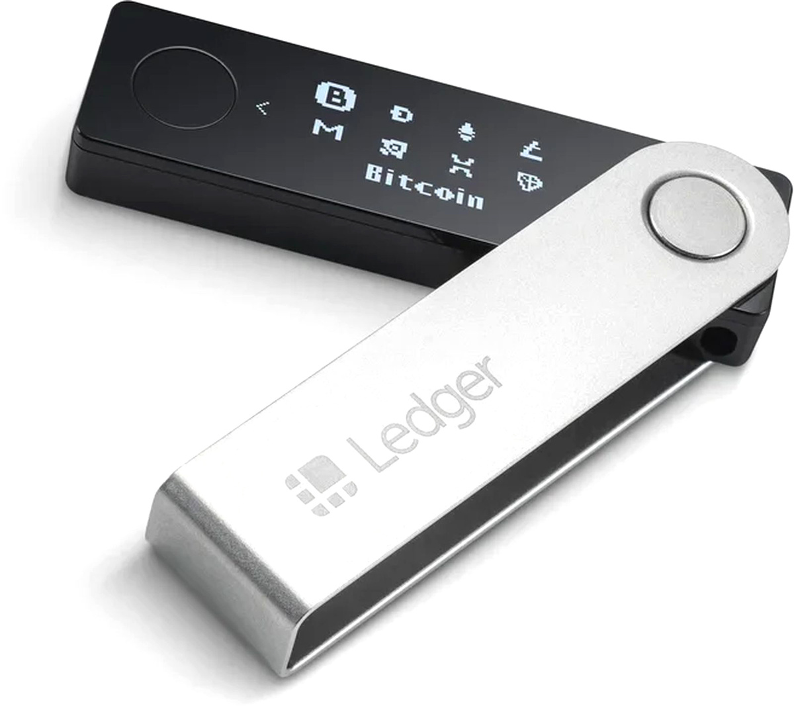

ETH-2955,87$ BITCOIN-39 594,70$ USD/RUB-77,38 руб. JPY/RUB-0,60 руб. GBP/RUB-99,35 руб. EUR/RUB-83,82
Криптовалюта: что это и как работает
По версии создателя биткоина Сатоши Накамото, криптомир держится на трех базовых основах: анонимность, децентрализация и надежность. Жизненная сила платежной системы – это блокчейн. По сути, это всего лишь архив, состоящий из последовательных блоков. В любом из этих блоков хранится информация обо всех транзакциях в криптовалютной сети за все время ее существования. Кроме того, в любом из блоков вшита хэш-сумма предыдущих блоков. Блокчейн одновременно хранится у всех участников системы. Если попробовать поменять хотя бы один блок, хэш из предыдущих блоков перестанет с ним совпадать. Поэтому изменить или взломать блокчейн нельзя.

Вредоносные программы, которые заменяют содержимое буфера обмена
Этот тип вредоносного программного обеспечения киберпреступники используют, чтобы скрыто заменить содержимое буфера обмена, воспользовавшись распространенным действием копирования и вставки. Впервые такую угрозу было обнаружено в магазине Google Play в виде приложения MetaMask. Вредоносная программа заменяла адреса кошельков Bitcoin и Ethereum, скопированные в буфер обмена, на адреса, принадлежащие злоумышленникам. Похожий прием был использован в фальшивой версии браузера Tor для похищения криптовалюты во время посещения пользователями даркнет-рынков. Это позволило операторам вредоносной программы похитить около 4,8 Bitcoin.
Поддельные страницы для входа
Киберпреступники часто распространяют фальшивые версии популярных криптокошельков для мобильных устройств или для известных бирж криптовалюты. Идея подобных вредоносных кампаний заключается в том, чтобы заполнить нишу, которую оставили известные торговые марки, и охватить больше потенциальных жертв. После загрузки одного из поддельных кошельков криптовалют пользователи переходят на страницу для входа в систему. Часто такие страницы являются фишинговыми и используются для похищения закрытых ключей пользователя, которые необходимы для получения контроля над кошельком. Некоторые киберпреступники используют кошельки, которые позволяют управлять несколькими криптовалютами для торговли на бирже — идеальный способ получить доступ к другим вашим кошелькам. Среди известных фальшивых приложений — Trezor, который предлагает один кошелек для каждой поддерживаемой криптовалюты (всего 13 кошельков). Кроме этого, существуют вредоносные мобильные приложения, которые пытаются накладывать фальшивые страницы для входа в настоящий кошелек или другие финансовые программы.
Вредоносные ссылки
Распространенными среди киберпреступников стали гомографические атаки, которые предусматривают создание доменов, похожих на известные сайты. На самом деле большинство таких ссылок являются фишинговыми. По данным телеметрии ESET, за второй квартал 2020 года наиболее популярными доменами среди злоумышленников стали blockchain.com и binance.com. Другим способом осуществления фишинга является отправка спам-сообщений с вредоносными ссылками, нажатие на которые часто приводит к загрузке банковских троянов, таких как Mekotio. Некоторые варианты этой вредоносной программы могут похищать Bitcoin, заменяя адрес вашего кошелька в буфере обмена. В других случаях злоумышленники используют программы для считывания нажатий клавиатуры. Использование торрент-сайтов для загрузки программного обеспечения и игр также может быть опасным. Именно на таких сайтах злоумышленники часто распространяют вредоносное программное обеспечение, как в случае с угрозой KryptoCibule. Эта вредоносная программа позволяла киберпреступникам перехватывать транзакции пользователя, заменяя адреса кошельков в буфере обмена, а также похищать любые файлы, связанные с криптовалютой, на устройстве жертвы.

Мошенничество
Некоторые пользователи для уменьшения рисков похищения или заражения криптокошельков используют кошелек без доступа в Интернет, например Ledger. В таких случаях пользователи часто недовольны удобством использования приложений. С целью улучшить использование криптокошельков киберпреступники предлагают загрузить расширение Google Chrome или Firefox, которые интегрируют кошелек Ledger с браузером. Для манипулирования потенциальными жертвами злоумышленники используют подобные сообщения: «Теперь вы можете получить доступ к функциям кошелька непосредственно с браузера для быстрого и легкого осуществления транзакций с криптовалютой. Для регистрации вам нужно просто поделиться своей фразой восстановления». Узнав фразу восстановления, злоумышленники могут быстро клонировать аппаратный кошелек и получить доступ к средствам его владельца. По некоторым данным, общий ущерб от этого вида мошенничества превышают 250 000 долларов. Продукты ESET обнаруживают эти угрозы как JS/ExtenBro.CryptoSteal. Киберпреступники постоянно совершенствуют свои методы заражения, находя новые слабые места пользователей или уязвимости в системе безопасности приложений. Чтобы уменьшить риски похищения ваших виртуальных средств и помочь обеспечить защиту криптокошельков специалисты ESET рекомендуют придерживаться следующих правил:
- Постоянно обновляйте устройства и используйте надежное решение по безопасности как для ПК, так и для вашего мобильного устройства, которые обладают функцией Безопасность онлайн-платежей для защиты криптокошельков или других финансовых программ.
- Перед загрузкой криптокошелька посетите официальный сайт сервиса и узнайте о наличии приложения.
- При загрузке криптокошелька с Google Play проверьте количество загрузок, его рейтинги и отзывы. Будьте осторожны с новыми приложениями, у которых слишком много положительных отзывов.
- Используйте многофакторную аутентификацию для дополнительной защиты криптокошелька.
- Будьте внимательны при вводе фразы и ключа восстановления криптокошелька.
- Вводите адрес кошелька вручную, не используя копирование и вставку. А после ввода не забывайте проверять правильность написания адреса
- Узнайте, предлагает ли поставщик приложения защиту или страхование пользователей на случай потери средств.
Безопасно ли использование криптовалютных кошельков?
В криптовалютных системах безопасность и целостность вашего счета гарантируется сетью агентов (передача сегментированных файлов или передача файлов из нескольких источников), которые проверяются майнерами. Они и защищают сеть, поддерживая высокую скорость алгоритмов обработки. Взлом существующей безопасности в криптовалюте математически возможен, но стоимость ее достижения является неприемлемо высокой. Например, злоумышленнику, пытающемуся обмануть блокчейн BTC, и провести «двойную трату», потребуется вычислительная мощность, которая превышает мощность всех майнеров в системе. Но даже тогда у него не будет всех возможностей управления. Хакеру нужно перейти порог мощности в 51%, чтобы хотя бы приблизиться к этой цели.
Как устроены криптовалютные кошельки?
Для работы с криптовалютами обычно требуется специальное программное обеспечение — это программа-кошелек, интегрированная либо в программную, либо в биржевую, либо аппаратную среду. Она позволяет пользователю работать с блокчейном и создавать транзакции или получать переводы на свой адрес Каждый кошелек, вне зависимости от среды функционирования, содержит приватный и публичный ключи. Публичный ключ — это цифровая строка, которую может увидеть каждый. Она состоит из набора букв и символов и используется при отправке средств на кошелек. Закрытый ключ — это своего рода ключ безопасности, состоящий из серии случайных чисел, сгенерированных криптографически, которые невозможно взломать. По сути, это шестнадцатеричное число, состоящее из 256 бит или 32 байта, которое создано для подписи переводов. Подписанная транзакция отправляется в сеть и после одобрения добирается до получателя.
